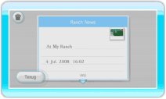

20 |
Album (fotoalbum) |
 |
Op de ranch gemaakte foto’s kun je bekijken of opslaan op het Wii-prikbord. Je kunt maximaal 20 foto’s in je fotoalbum opslaan. Je kunt ze ook opslaan op een SD-kaart. Opmerking: als je meer dan 20 foto’s maakt, worden de oudste foto’s automatisch verwijderd. ● Het fotoalbum bekijken Wanneer je ALBUM selecteert in het hoofdmenu, verschijnt er een fotoalbumscherm. Als je een andere foto wilt bekijken, wijs dan naar de groene pijl en druk op Back (terug)
Verlaat het fotoalbumscherm. Save to SD Card (opslaan op een SD-kaart)
Hiermee sla je de foto’s van My Pokémon Ranch op op een SD-kaart (in JPEG-formaat). Opmerking: foto’s die je op een SD-kaart opslaat kunnen niet worden teruggeplaatst in je fotoalbum. Je kunt ze wel bekijken in het fotokanaal of op je computer. Opmerking: het auteursrecht op de in My Pokémon Ranch gemaakte foto’s berust bij The Pokémon Company en andere partijen. Gebruik ze niet voor doeleinden die niet zijn toegestaan. Delete all pictures on SD Card (verwijder alle foto’s op een SD-kaart)
Verwijdert alle My Pokémon Ranch-foto’s die je op een SD-kaart hebt opgeslagen. 
Post on the Wii Message Board (opslaan op het Wii-prikbord)
Je kunt foto’s op het Wii-prikbord opslaan en ze bekijken. Secure / Cancel Secure (beveiligen / beveiliging opheffen)
Je kunt een foto beveiligen of de beveiliging opheffen. Als je een foto beveiligt, wordt deze niet verwijderd. Je kunt maximaal 19 foto’s beveiligen. Delete (verwijderen)
Je kunt de foto die nu getoond wordt verwijderen.
|
 (links of rechts),
(links of rechts),  , of
, of  .
. |
 |
 |